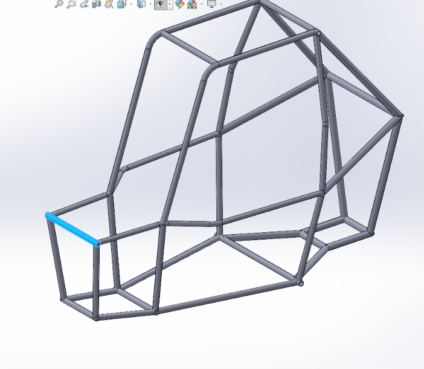
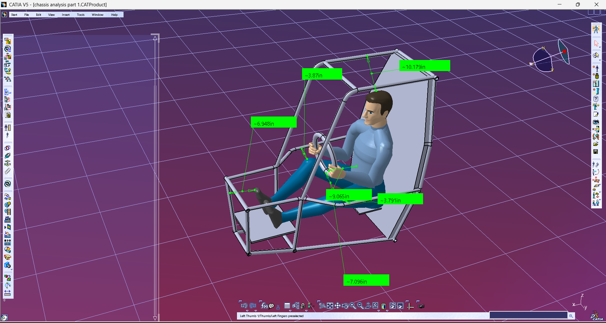
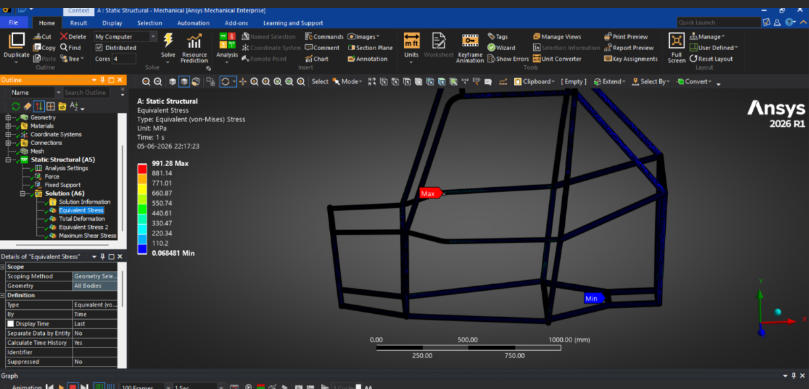
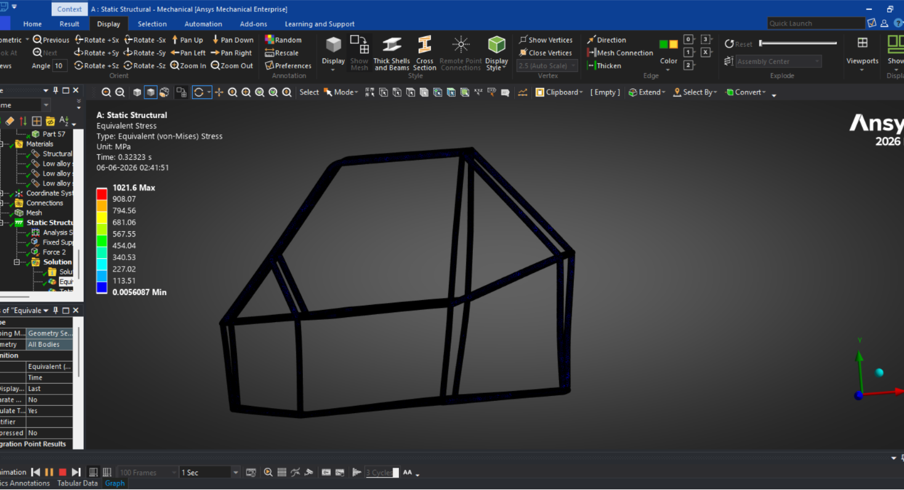
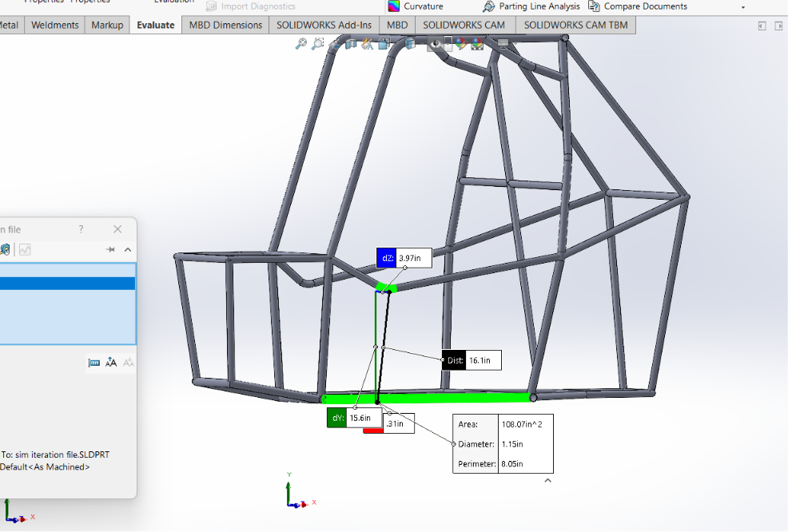
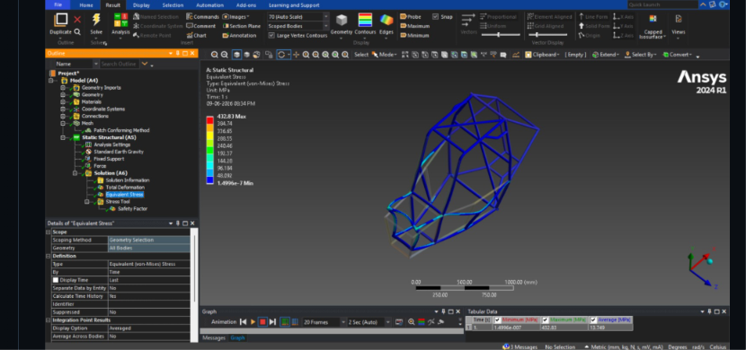
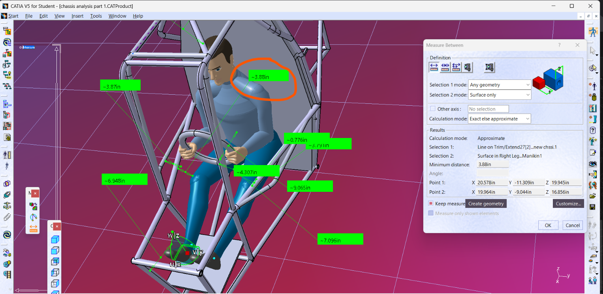
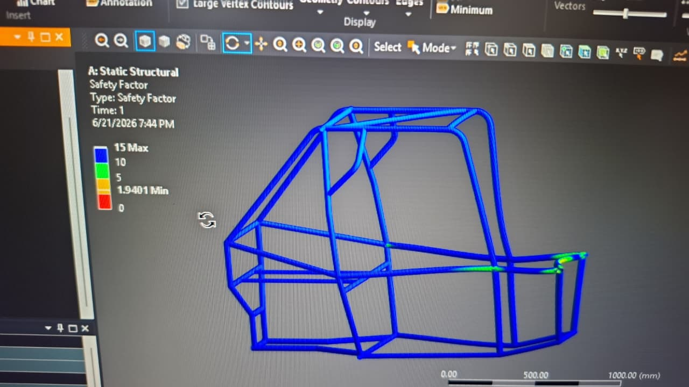
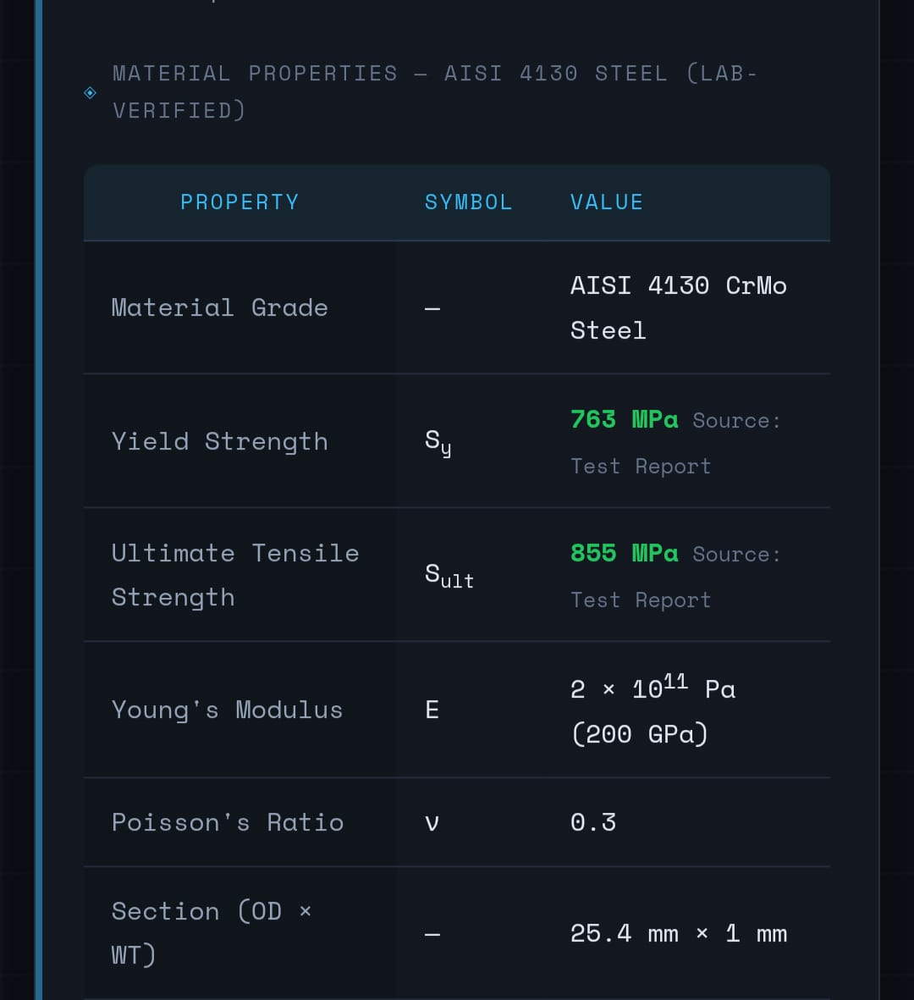

01
Initial cage layout
RejectedDriver clearances were acceptable in the initial CAD review, but the first structural analysis reported a factor of safety below 1. The layout was not retained.



BAJA SAE / ATVC · CHASSIS STRUCTURE
A concise record of four design iterations balancing structural load paths, driver clearance and manufacturability.
Retain a straight side-impact member (SIM), widen its rear connection as needed, and refine the surrounding structure to satisfy clearance and fabrication constraints.

01 / DESIGN DEVELOPMENT
Each iteration addressed a different part of the trade-off. The final concept prioritizes the clearance envelope and a simpler, straight SIM layout.
Driver clearances were acceptable in the initial CAD review, but the first structural analysis reported a factor of safety below 1. The layout was not retained.



The frame and load-transfer arrangement was revised to direct forces through member nodes. The SIM stress did not improve meaningfully, so the expected factor-of-safety gain was not achieved.

The SIM was routed downward and then angled into the rear structure. The reported factor of safety was about 1.7, but the bend intruded into the driver-clearance envelope and was not practical for the selected layout.


The selected direction keeps the SIM straight and widens/refines its rear connection. This improves driver clearance and simplifies fabrication compared with the 3D-bent alternative. The supplied safety-factor screenshot for this direction reports a minimum FoS of 1.9401. That plot does not demonstrate FoS greater than 2, so a separate matching result would be needed to substantiate a value above 2.
The screenshot reports a minimum FoS of 1.9401. Treat this as the value shown by that result; do not claim FoS > 2 unless a result for the exact final geometry and load case supports it.


02 / MATERIAL INPUT
The supplied property sheet is shown as the material-input reference used for the ANSYS setup.

These are values transcribed from the supplied sheet, not an independent certification. Confirm the actual tube grade, condition and certificate before design release.
03 / DRIVER PACKAGING
The iteration sequence shows why structural improvement alone was not enough. The 3D-bent alternative improved the reported structural margin but did not meet driver clearance. The selected direction keeps the SIM straight and refines the rear connection instead.
04 / VALIDATION NOTES
This is a design-iteration case study, not a certification of the roll cage. The material values and stress images should only be compared when they correspond to the same model, material definition and load case.